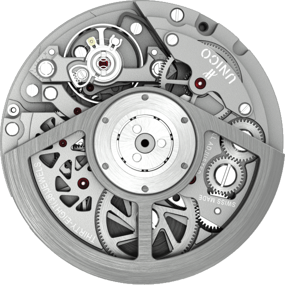
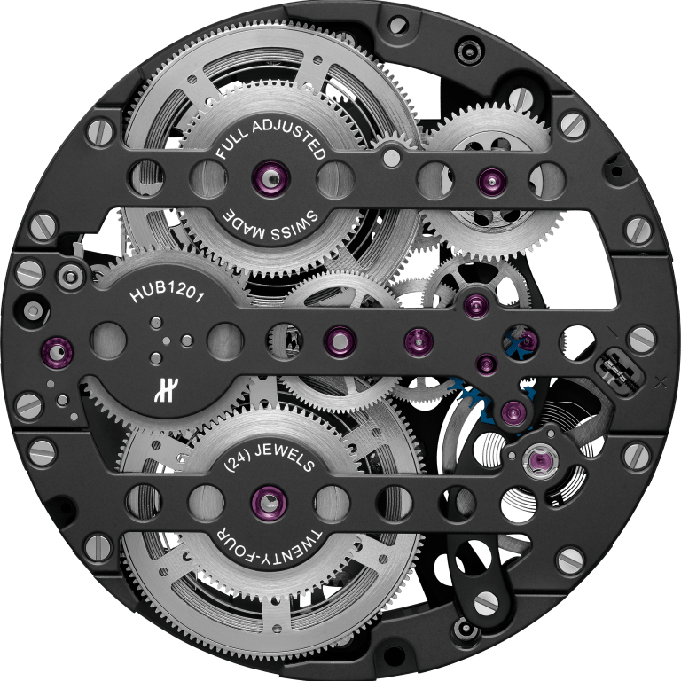
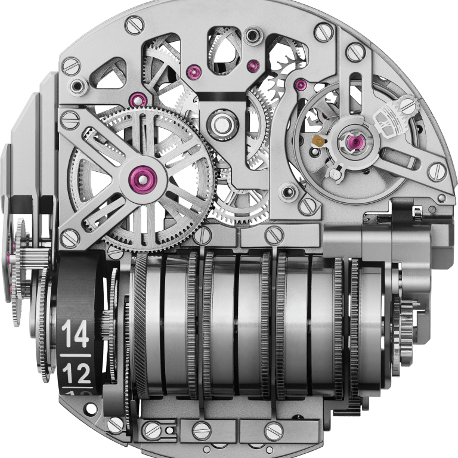

Levizjet E Hublotit

UNICO
"Lëvizja e parë 100% Hublot "House", kalibri Unico ka projektuar një
fytyrë të re për
kronografin automatik."

MECA-10
"Një rezervë energjie 10-ditore dhe ekran atipik me raft dhe pinion."

MP-11
"Një rezervë e pakrahasueshme e energjisë 14-ditore e mbështetur
nga shtatë fuçi në linjë të
dukshme në anën e numrit."
“Hublot's strength resides in its very clear identity - the art of fusion - this unique ability to create timepieces which combine tradition and innovation.”
Ricardo Guadalupe